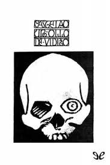
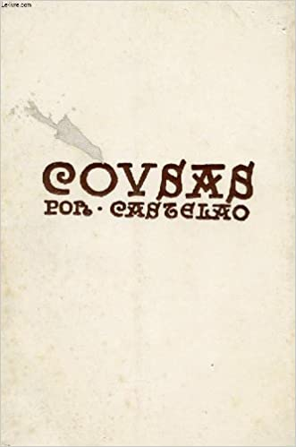
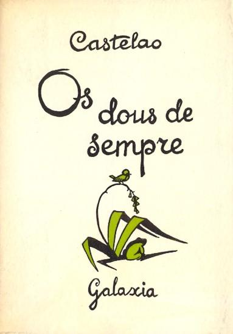

Algunas de sus obras
-

Un ollo de vidro. Memorias dun esquelete
El cuerpo central del relato lo componen las memorias del esquelto. Castelao señala en el prólogo del relato que un enterrador amigo suyo ha descubierto dentro de un ataúd un misterioso esqueleto, con un ojo de vidrio, que tiene al lado unas hojas de papel escritas, que parecen ser obra suya. El narrador decide comprar al enterrador estas memorias y hasta el ojo de vidrio.
Saber más... -

Cousas
Son dos volúmenes(1926 y 1929), reunidos en solo uno en 1934 en el que reine cuarenta y cuatro relatos breves. Crea un subgénero narrativo nuevo, pues cada cuento va precedido por un dibujo. Texto del relato y dibujo se iluminan mutuamente, ambos son significativos y a ambos les da la misma categoría Castelao, ninguno se subordina al otro.
Saber más... -

Os dous de sempre
La única novela de Castelao. Nos ofrece la andadura vital de dos personaje antiéticos, Pedriño y Rañolas, desde la infancia hasta la madurez. Podemos, por lo tanto, considerarla una novela de aprendizaje.La novela resulta una representación de la Galicia en la época de Castelao, mostrando tanto una parte rural como la parte urbana a lo largo de la obra.
Saber más...